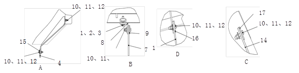
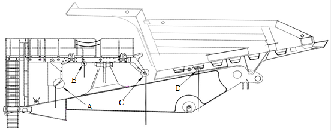

Самосвал NTE240
Самосвал NTE240
Инструкция по ремонту
Inner Mongolia North Hauler Joint Stock Co., Ltd. (NHL)
Китайская Баотоуская редкоземельная высокотехнологичная промышленная зона развитияКаталогНомер частиСодержаниеНомер инструкцииСерийный номерВерсияДатаНомер изменения000Описание и управление 000-0000ОписаниеSM00000715 000-0010БезопасностьSM00000092 000-0020Предпусковой осмотрSM00000138 000-0030УправлениеSM00000005 020Конструкционные детали 020-0000РамаSM00000527 020-0020Лестницы и огражденияSM00000535 020-0030Защитный кожух радиатора в сбореSM00000536 020-0040Топливный бакSM00000883 020-0050Установка автомобилей и аксессуаровSM00000123 020-0110
020-0230Установка брызговика
Обшивка двигательного отсекаSM00000537
SM00000886 030Электрическая система 030-0190Переключатели и датчикиSM00000538 040Силовая система 040-0000ДвигательSM00000102 040-0040Воздушный фильтрSM00000017 040-0050Система охлажденияSM00000260 040-0060Модуль охлаждения радиатораSM00000261 040-0070ГлушительSM00000104 040-0080Система охлаждения генератора переменного тока и электрических колесSM00000262 050Гидравлическая система 050-0000Описание гидравлической системыSM00000305 050-0010Гидравлический фильтрSM00000023 050-0020Гидравлический бакSM00000540 050-0030Привод гидронасоса в сбореSM00000884 050-0040Описание системы подъемаSM00000026 050-0050Насос подъемаSM00000097 050-0060Блок клапанов управления подъемомSM00000028 050-0080Гидроцилиндр подъемаSM00000600 050-0090Описание системы рулевого управленияSM00000030 050-0100Насос рулевого управленияSM00000031 050-0110Энергоаккумулятор рулевого управленияSM00000241 050-0120Клапан изменения направления движенияSM00000033 050-0130Усилитель потока рулевого управленияSM00000034 050-0140Гидроцилиндр поворотаSM00000271 050-0150Блок клапанов управления поворотомSM00000036 050-0170Описание тормозных системSM00000306 050-0180Тормозной энергоаккумулятор в сбореSM00000242 050-0200Тормозной клапанSM00000039 050-0210Блок клапанов управления торможением в сбореSM00000885 050-0240Гидравлическая система отвода теплаSM00000042 070Ходовая система 070-0000Передний мостSM00000297 070-0010Переднее колесо в сбореSM00000298 070-0020Цилиндр передней подвески в сбореSM00000294 070-0030Рулевой механизмSM00000299 070-0040Корпус моста и установкаSM00000233 070-0060Установка электрических колесSM00000274070-0070Цилиндр задней подвески в сбореSM00000529 080Тормозные системы 080-0000Передний тормозSM00000300080-0010Задний тормозSM00000275080-0020Стояночный тормоз в сбореSM00000276 090Кабина 090-0000Кабина и ее установкаSM00000053 090-0070СиденьеSM00000534 090-0080Вторичное сиденьеSM00000180 090-0140КондиционерSM00000135090-0150Сборка зеркал заднего видаSM00000266090-0180Узел педали замедленияSM00000056 090-0200Узел педали электронной дроссельной заслонкиSM00000057 100Вспомогательная система 100-0000Централизованная система смазкиSM00000450 100-0010Насосная установка в сбореSM00000478 100-0020МасленкаSM00000479 100-0030Система централизованного заполненияSM00000524150Шины и ободья 150-0000Метод крепления болтов шиныSM00000277 150-0010Шина с ободом в сбореSM00000278 200Дополнения 200-0000Техническое обслуживание карьерного самосвалаSM00000489 200-0030Порядок сборки на местеSM00000069 200-0040Рекомендуемые домкраты и опорыSM00000070 200-0050Рекомендуемые смазочные материалы и жидкостиSM00000291200-0060Порядок подварки на местеSM00000141 200-0070Моменты затяжки стандартного крепежаSM00000073 200-0080Перевод дюймовых и метрических единиц измеренийSM00000074 200-0090Масса компонентовSM00000533
Спецификация
1.
Плоская шайба
7.
Брызговик
13.
Брызговик
2.
Болт
8
Уголок
14.
Брызговик
3.
Регулировочная гайка
9.
Плита
15.
Прижимная планка
4
Брызговик
10
Шестигранный болт
16
Прижимная планка
5
Левая сборка кронштейн
11
Плоская шайба
17
Прижимная планка
6
Правая сборка кронштейна
12
Гайка-стопорная
Рис. 1. Монтажная схема брызговикаустановка брызговика
Описание и расположение
Брызговик карьерного самосвала является высокопрочным резиновым защитным продуктом, который предотвращает загрязнение грязи и масла на мокрой дороге во время работы, является защитной мерой во избегание загрязнение. В четырех частях карьерного самосвала устанавливаются брызговики, т. е. впереди переднего колеса, позади переднего колеса, впереди заднего колеса, а также на поверхностях топливного бака и гидравлического бака (см. рис. 1).
Техническое обслуживание и регулировка
Периодическое техническое обслуживание должно включать следующие виды работ:
1. Проверить резиновый брызговик на наличие износа или старения.
2. Убедиться, что резиновый брызговик находится в правильном положении.
Снятие
1. По очереди ослаблять и снять болты и гайки крепления листовой резины и прижимной планки с помощью подходящего инструмента.
2. Свернуть резиновый брызговик по направлению, перпендикулярному к кордной ткани.
Проверка и ремонт
Брызговик можно проверить следующим образом:
1. Проверить все резьбовые отверстия на наличие повреждений и отремонтировать или замените их по требованиям.
2. Проверить все слои резины на наличие признаков старения и опадения или других повреждений, а также отремонтировать или замените их по требованиям.
Уставнока
Установить брызговик в обратном порядке разборки.
Конструктивные детали - установка брызговика
020-0110
Конструкционные детали - топливный бак
020-0040
2
5
Конструктивные детали - установка брызговика
020-0110
1
Конструктивные детали - установка брызговика
020-0110
2
3
Спецификация1.пружинная шайба8.левая передняя крыльевая сборка15.правое нижнее крыло2.плоская шайба9.правая передняя крыльевая сборка16.левое верхнее крыло3.плоская шайба10.левая крыльевая сборка17правое верхнее крыло4.пружинная шайба11.правая крыльевая сборка18левая верхняя крыльевая сборка5.болт12.левая дверная сборка19правая верхняя крыльевая сборка6.болт13.правая дверная сборка207.гайка14.левое нижнее крыло21Рис. 1 Обшивка двигательного отсекаСпецификация1.пружинная шайба8.левая передняя крыльевая сборка15.правое нижнее крыло2.плоская шайба9.правая передняя крыльевая сборка16.левое верхнее крыло3.плоская шайба10.левая крыльевая сборка17правое верхнее крыло4.пружинная шайба11.правая крыльевая сборка18левая верхняя крыльевая сборка5.болт12.левая дверная сборка19правая верхняя крыльевая сборка6.болт13.правая дверная сборка207.гайка14.левое нижнее крыло21Рис. 1 Обшивка двигательного отсека
Спецификация
1.
пружинная шайба
8.
левая передняя крыльевая сборка
15.
правое нижнее крыло
2.
плоская шайба
9.
правая передняя крыльевая сборка
16.
левое верхнее крыло
3.
плоская шайба
10.
левая крыльевая сборка
17
правое верхнее крыло
4.
пружинная шайба
11.
правая крыльевая сборка
18
левая верхняя крыльевая сборка
5.
болт
12.
левая дверная сборка
19
правая верхняя крыльевая сборка
6.
болт
13.
правая дверная сборка
20
7.
гайка
14.
левое нижнее крыло
21
Рис. 1 Обшивка двигательного отсека
Спецификация
1.
пружинная шайба
8.
левая передняя крыльевая сборка
15.
правое нижнее крыло
2.
плоская шайба
9.
правая передняя крыльевая сборка
16.
левое верхнее крыло
3.
плоская шайба
10.
левая крыльевая сборка
17
правое верхнее крыло
4.
пружинная шайба
11.
правая крыльевая сборка
18
левая верхняя крыльевая сборка
5.
болт
12.
левая дверная сборка
19
правая верхняя крыльевая сборка
6.
болт
13.
правая дверная сборка
20
7.
гайка
14.
левое нижнее крыло
21
Рис. 1 Обшивка двигательного отсека
Обшивка двигательного отсека
Описание и местоположение
Обшивка двигательного отсека покрывает область от нижней части платформы и задней части обшивки до передней части рамной балки, защищая двигатель и сопутствующие компоненты.
Операция
Обшивка двигательного отсека имеет две функции:
1. Защита двигательного отсека от попадания посторонних предметов и предотвращение повреждений от окружающих объектов.
2. Обеспечение удержания тепла внутри двигательного отсека.
Ремонт и регулировка
Проверьте, все ли кронштейны и болты надежно закреплены, а также что сборка не повреждена и находится в исправном рабочем состоянии.
Демонтаж
Следуйте следующим шагам для демонтажа обшивки:
1. Отсоедините соответствующие кабели.
2. С помощью подходящего подъемного оборудования (трос, кольцо и т. д.) подсоединитесь к изогнутой панели двигательного отсека.
3. Снимите болты и шайбы, которыми обшивка двигательного отсека крепится к кожуху.
4. Снимите болты и шайбы, которыми обшивка двигательного отсека крепится к раме.
5. Снимите болты и шайбы, которыми обшивка двигательного отсека крепится к платформе.
6. Поднимите обшивку двигательного отсека и разместите ее в подходящем рабочем месте.
Ремонт
Ремонт обшивки двигательного отсека включает в себя следующие шаги:
1. Ремонт или замена поврежденных металлических деталей.
2. При необходимости производится ремонт или замена.
Монтаж
Следуйте следующим шагам для установки сборки обшивки:
1. Поднимите обшивку двигательного отсека из рабочей зоны и выровняйте её с соответствующими монтажными отверстиями на платформе и раме.
2. Используя болты и шайбы, закрепите обшивку двигательного отсека к платформе.
3. Используя болты и шайбы, закрепите обшивку двигательного отсека к раме.
4. Снимите трос с крана с обшивки двигательного отсека.
5. Повторно подсоедините ранее снятые стандартные детали.
Иллюстрации


